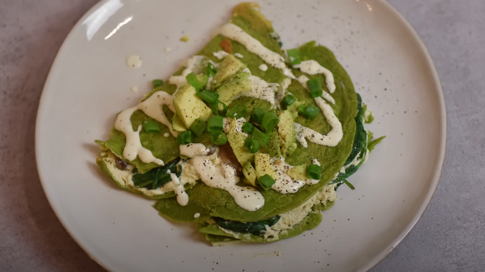

Spinach crepes with tofu filling

These crepes look great, taste great and are great for you body! The
beautiful green spinach crepes are filled with creamy tofu, which reminds
of cottage cheese, mushrooms, avocado and nuts for extra crunch. They'll
leave you full and energized. The recipe is vegan, but can be modified to
be gluten free too.
Ingredients
- 400g tofu
- lemon juice (from half a lemon)
- plant milk of your choice (soy and oat fit the best)
- a handful of cut up chives
- 3 garlic cloves or 1 teaspoon garlic powder
- 2 spoons nutritional yeast
- salt
-
1 glass all purpose flour (or chickpea flour for gluten-free option)
- spinach
- avocado
- mushrooms
- nuts of your choice (walnuts or cashews fit the best)
Steps
-
Break tofu to smaller pieces and put in a blender, add lemon juice from
half a lemon, 3 spoons of plant milk, a handful of cut up chives, 3
cloves of garlic or a teaspoon of garlic powder, 2 spoons of nutritional
yeast and a half teaspoon salt. Mix all together in a blender until
smooth. Put the tofu cream in a different bowl.
-
Prepare crepe batter in the blender. Fill it with 1 glass of flour, a
handful of spinach, 1 glass of plant milk and mix together.
-
Cook the crepes in a hot pan with oil until each side is golden-brown.
-
Cut up mushrooms and cook them on another pan with spinach and nuts.
-
Spread the tofu cream on a half of a pancake, add mushrooms, spinach and
nuts, then fold the crepe in half. on top put avocado but in slices. To
make the crepes look even better, you can sprinkle them with some sauce
made out of the tofu cream mixed with more milk and some chives.